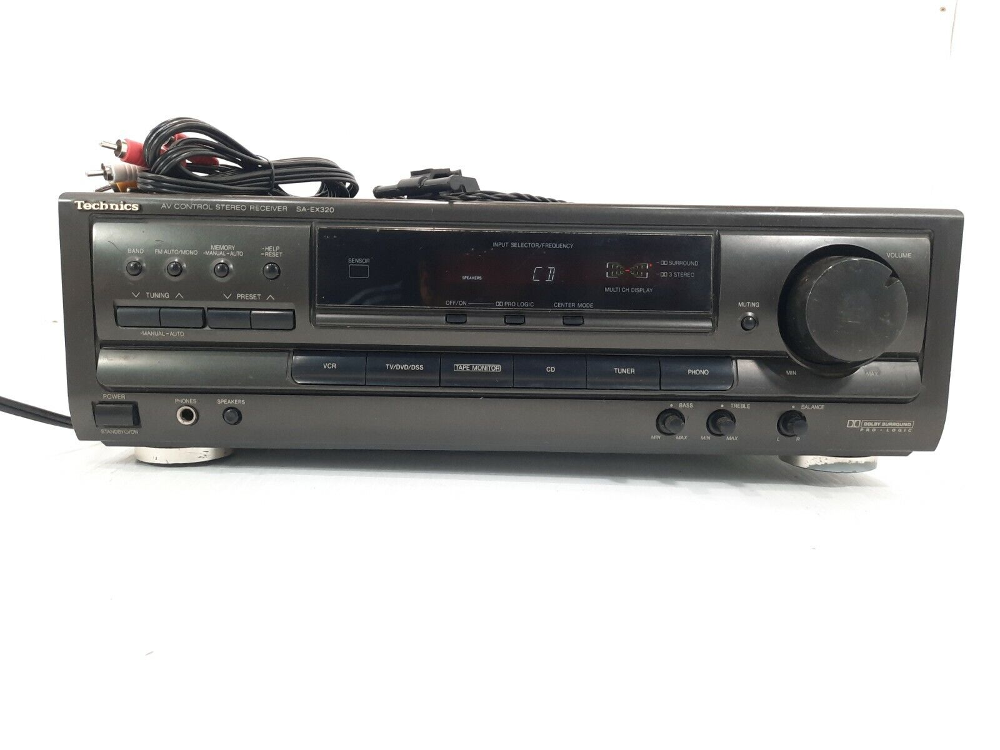
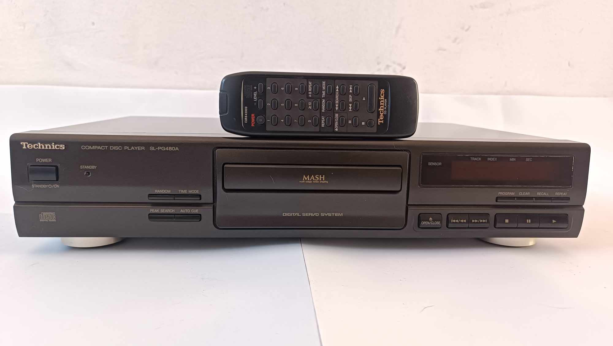
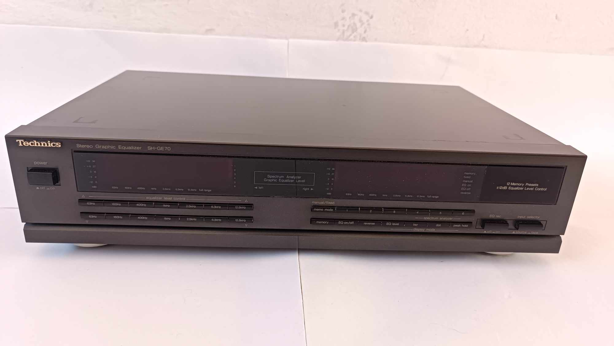
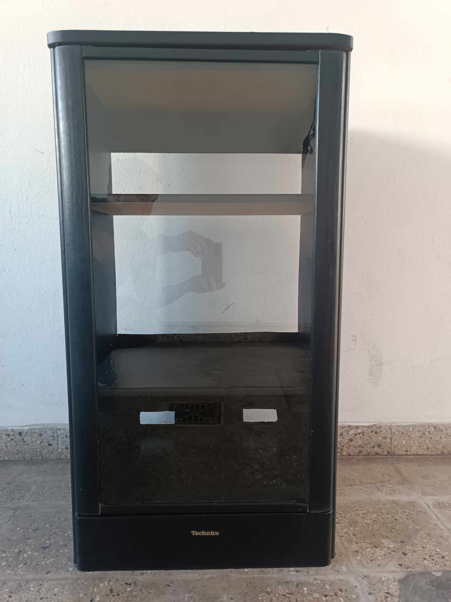

Sintoamplificador Technics SA-EX320
Precio: $150.000
Excelente amplificador y muy buen estado de conservacion.Potencia 100W en 8ohms.Tiene entradas analogicas para conexiones de compacteras,caseteras y bandeja giradisco.Es 220 volts y tiene un peso de 8kg.Made in Malasia

Ver mas
Sintoamplificador Technics SA-EX510
Precio: $200.000
Gran amplificador construido a mediado de los años 90 en excelente estado de conservacion.Potencia 120W en 8ohms.Tiene entradas analogicas para conexiones de compacteras,caseteras y bandeja giradisco.Es 220 volts y tiene un peso de 9,5kg.Made in Malasia
 Ver mas
Ver mas
Compactera Technics
Precio: $90.000
Excelente compactera Technics construida en 1998.Una de las ultimas compacteras de la marca.Lee cds originales y grabados de forma perfecta.Su conexcion es analogica.Es 220 volts y tiene un peso de 4,5kg.Made in Malasia

Ver mas
Ecualizador Technics
Precio: $225.000
Ecualizador de la marca technics que permite la modificacion del sonido mediante sus bandas.El estado es excelente y el funcionamiento perfeto.Construido en 1995.Es 110Volts y no incluye su transformador.Made in Japon

Ver mas
Amplificador Yamaha DSPA1
Precio: $1.100.000
Gran amplificador construido en el año 2000,ganando insuperables premio al mejor amplificador del año.Excelente construccion.El estado de conservacion del mismo es excelente.Tiene una potencia maxima de 120W reales en 8ohms.Tiene entradas analogicas y digitalespara conexiones de compacteras,caseteras y bandeja giradisco.Es 220 volts y tiene un peso de 22,5kg.Made in Japon
 Ver mas
Ver mas
Rack Technics
Precio: $70.000
Rack de madera con puerta de vidio original de Technics.Excelente estadod e conservacion.Tiene 2 estantes,donde 1 de ellos es regulable.Sus medidas son 1 metro de alto x ,055mts de ancho.Construido de madera melamina simil wengue en negro con grietas.

Ver mas